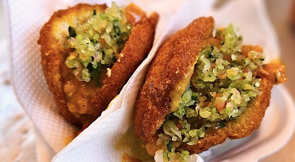

Descrição
Sertão do Sol é um restaurante com comidas típicas, localizado no centro de São Paulo, na Sé. Trazendo a cultura, arte e, com certeza o gosto do Nordeste.Em uma esquina movimentada de uma grande cidade, o restaurante "Sertão do Sul" exalava o calor e a vivacidade do Nordeste. Fundado por João e Maria, um casal apaixonado pela culinária da região, o local se tornou um refúgio para quem buscava sabor e tradição. Com pratos como feijão verde, carne de sol e pamonha, o "Sertão do Sul" não só servia comida, mas oferecia um pedacinho do sertão em cada garfada. A cada visita, os clientes saíam não apenas satisfeitos, mas com a sensação de ter experimentado um pedaço do nordeste em pleno sul..jpg)
Menu
São os principais pratos vendidos no restaurante, porém temos um cardápio maior.
Buchada

Buchada de Bode ou simplesmente Buchada, feito com os orgãos de um bode, como rins, fígado e vísceras.
Acarajé
O Acarajé é uma especialidade gatronômica, dentro das culinárias afro-brasileiras, é um bolinho de massa feito com feijão-fradinho e frito.
Moqueca
.jpg)
A Moqueca é um cozido feito geralmente de peixe, dentro de uma caldeira, ou do tupi.
Baião de Dois
.jpg)
Baião de Dois é um prato que consiste num preparado de arroz e feijão, ou feijão verde, com diversos complementos, como queijo, nata, carne seca e verduras.
Bobó de Camarão
.jpg)
Bobó de Camarão é um amassado de camarão, aipim ou macaixeira.
Endereço
Rua da Sé, N° 200 - Bairro: Sé, São Paulo - SP, 010001-001
Redes Sociais e Contato
Telefone:(11) 2201-3158
Celular: (11) 95277-9156
Facebook:Sertão do Sol
Instagram: @SertãodoSol